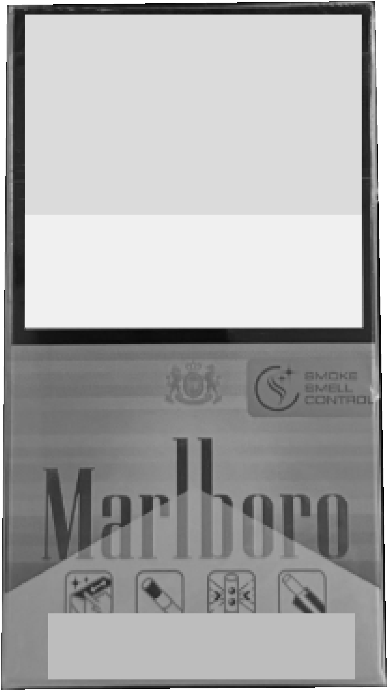

What is a Korean cigarette box?
Picture a cigarette pack with bright colors, a sleek minimal layout, and a fresh-sounding name like "garden splash." Now picture half of its front covered by a photo of black lungs or open-heart surgery. In South Korea, every pack looks like this.


Hover over the box!
Who This Guide is For
This guide is for design and marketing students who are new to Korean culture. Each Korean cigarette box has two creators with opposite goals. The Korean government requires graphic warnings to discourage smoking. Tobacco brands like Marlboro and KT&G use color, naming, and layout to keep their product appealing anyway.
Why This Matters for Designers
As designers, we often picture having full control over a package. In real jobs, that isn't always true. Laws, health regulations, and clients can control part of what you create.
Korean cigarette boxes show this clearly. By law, every pack must give 50% of its front to a graphic warning. It must also list carcinogens and include a quitline number and a warning against sales to anyone under 19. The government's goal is to reach every smoker, and even non-smokers who glance behind the convenience store counter, with images strong enough to push people toward quitting. Brands are also not allowed to name flavors, because research shows flavor cues make cigarettes seem less harmful (Heo et al., 2026). So companies like Marlboro and KT&G design around the rules: